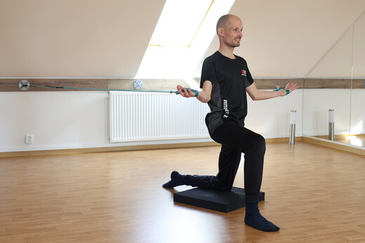
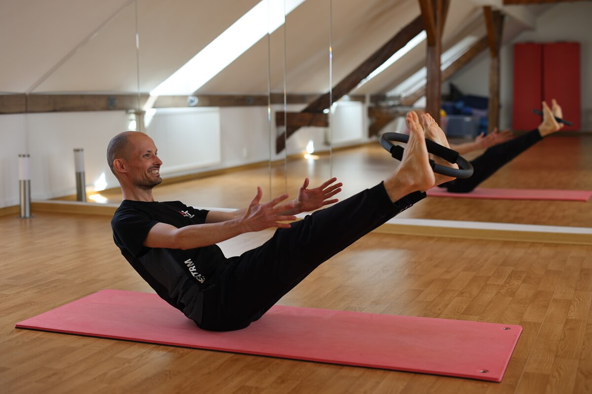
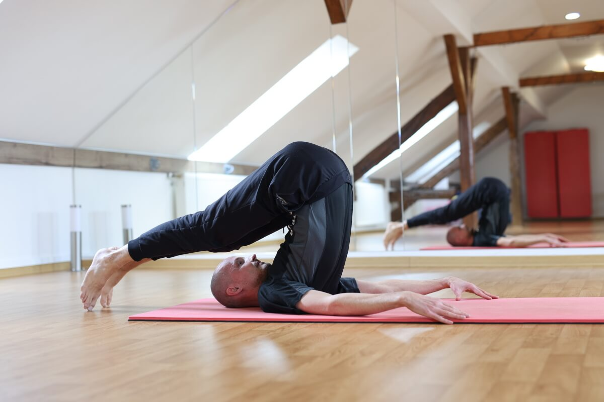
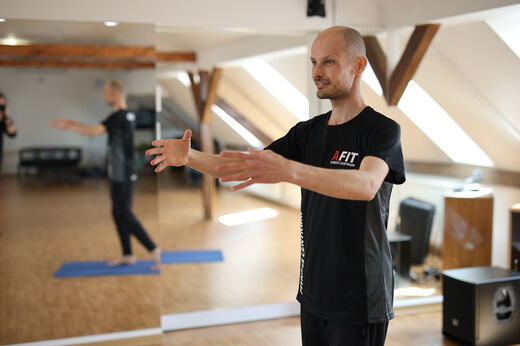

Cvičení přizpůsobuji každému individuálně — ať už přicházíte s bolestí, po zranění, nebo chcete posílit a zlepšit kondici. Propojuji různé přístupy tak, aby výsledek byl co nejefektivnější právě pro vás.
Funkční trénink má vést k tomu, že když musíme doběhnout autobus, chytit padající předmět nebo vybalancovat uklouznutí, nic se nám nestane. Nerupne plotýnka, neurvou se vazy a podobně.
Znamená to rozvíjet různé typy síly od izometrie po plyometrii, ideálně ve cvicích připomínajících běh, házení či lezení — pohybové vzory, na které se lidské tělo během evoluce přizpůsobilo nejvíce. Zde máme také přesah z rehabilitačních cvičení (SPS a vývojovka), které mozku připomínají správné vrozené pohybové vzory.
Tuto metodu vyvinul MUDr. Richard Smíšek a dále ji rozvíjejí jeho dcery Kateřina a Zuzana Smíškovy. K aktivaci „spirálních svalových řetězců" se používají gumová lana. Cvičení je vhodné úplně pro všechny — od dětí a seniorů po sportovce, od pacientů s bolestmi zad a kloubů po úplně zdravé jedince.
Naše tělo se hýbe jako celek, kdy na sebe jednotlivé svaly navazují a tvoří funkční řetězce. Lékem je vyvážený ladný „spirálně stabilizovaný" pohyb. Nejdříve se učíte základy ve stoje, případně vsedě, následně přidáváme krokové varianty a ve sportovní verzi i stepper, výpady a dřepy.
Pilates je skvělé cvičení využitelné od rehabilitací až po kondiční nebo kompenzační plány pro sportovce. Osobně vycházím ze školy Stott-Merrithew. Do sestav rád přidávám prvky vývojové kineziologie a protažení fascií.
Pilates stojí na šesti pilířích — koncentraci, dechu, centru těla, kontrole, přesnosti a plynulosti. Mám rád rovněž propojení s Trager approach, které je o jemnosti a hravém zkoumání pohybu.




Palackého třída 22
612 00 Brno - Královo pole